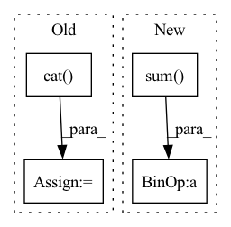

Pattern ID :16567
Before Change
mean_entity = mean_entity + entity
mean_entity = mean_entity / (real_number)
tensor_list.append(mean_entity.reshape(1, -1))
tensor_mean = torch.cat( tensor_list, dim=0)
print("tensor_mean:", tensor_mean) if debug else None
// print("out.shape:", out.shape) if debug else None
After Change
// sum over across the units
// masked_out: [batch_seq_size x entities_size x embeding_size]
// z: [batch_size, embeding_size]
z = masked_out.sum(dim=1, keepdim=False)
// here we should dived by the entity_num, not the cls.max_entities
// z: [batch_size, embeding_size]
z = z / entity_num
// note, dim=1 means the mean is across all entities in one timestep
// The mean of the transformer output across across the units
In pattern: SUPERPATTERN
Frequency: 3
Non-data size: 4
Instances Fragment ID: 55772955
Project Name: liuruoze/mini-alphastar
Commit Name: 612d42a7bf5ef827e1e919198d839fce106155cd
Time: 2021-11-25
Author: liuruoze@163.com
File Name: alphastarmini/core/arch/entity_encoder.py
M Class Name: EntityEncoder
N Class Name: EntityEncoder
M Method Name: forward(3)
N Method Name: forward(2)
M Parent Class: nn.Module
N Parent Class: nn.Module
M File Name: alphastarmini/core/arch/entity_encoder.py
N File Name: alphastarmini/core/arch/entity_encoder.py
M Start Line: 721
M End Line: 758
N Start Line: 716
N End Line: 778
Before Change
labels = scores.new_ones(n_cand)
labels[0] = 0.
all_labels.append(labels)
all_labels = torch.cat( all_labels) // (//total candidate in this batch,)
return self.criterion(all_scores, all_labels)
def decodes(self, preds): return wsc_trick_predict(preds)After Change
loss = self.criterion(scores, scores.new(labels)) // ?
losses.append(loss)
if losses:
return torch.stack(losses).sum() / len(losses) // average
else:
raise CancelBatchException
Fragment ID: 55772953
Project Name: richarddwang/electra_pytorch
Commit Name: 4ae9c6007de255ab71d1fd26eae3eaa9532ff04f
Time: 2020-09-20
Author: richardyy1188@gmail.com
File Name: _utils/wsc_trick.py
M Class Name: ELECTRAWSCTrickLoss
N Class Name: ELECTRAWSCTrickLoss
M Method Name: __call__(3)
N Method Name: __call__(3)
M Parent Class:
N Parent Class:
M File Name: _utils/wsc_trick.py
N File Name: _utils/wsc_trick.py
M Start Line: 160
M End Line: 167
N Start Line: 159
N End Line: 170
Before Change
neg_loss = (pattern[stitch[0][0]][stitch[0][1]] - pattern[other_stitch[0][0]][other_stitch[0][1]]) ** 2
neg_losses.append(neg_loss)
tot_neg_loss = torch.cat( neg_losses) .sum()
stitch_losses.append(max(similarity_loss - tot_neg_loss + self.triplet_margin, 0))
// Find out which edges are not connected to anythingAfter Change
neg_loss = (pattern[stitch[0][0]][stitch[0][1]] - pattern[other_stitch[0][0]][other_stitch[0][1]]) ** 2
neg_losses.append(max(self.triplet_margin - neg_loss.sum(), 0)) // ensure minimal distanse
// Compare to zero too
neg_losses.append(max(self.triplet_margin - (pattern[stitch[0][0]][stitch[0][1]] ** 2).sum() , 0))
stitch_losses.append(similarity_loss + sum(neg_losses))
Fragment ID: 55772957
Project Name: maria-korosteleva/garment-pattern-estimation
Commit Name: f69f233402413e4585d82793f697c2b13342f303
Time: 2020-10-28
Author: mariako@kaist.ac.kr
File Name: nn/metrics.py
M Class Name: PatternStitchLoss
N Class Name: PatternStitchLoss
M Method Name: __call__(3)
N Method Name: __call__(3)
M Parent Class:
N Parent Class:
M File Name: nn/metrics.py
N File Name: nn/metrics.py
M Start Line: 99
M End Line: 110
N Start Line: 92
N End Line: 114